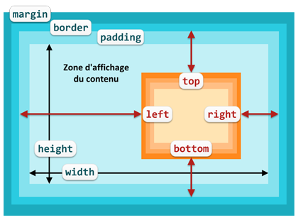

Le positionnement absolu retire la boîte du flux normal et la
positionne dans son bloc conteneur. Celui-ci joue donc un rôle
primordial et il faut bien arriver à le situer dans l'imbrication des
éléments de la page HTML
Principes
position: absolute;
Une boîte en positionnement absolu est positionnée par rapport à son
bloc
conteneur : l'ancêtre le plus proche en positionnement relatif,
absolu ou fixe. S'il n'y a pas d'ancêtre correspondant, l'ancêtre
est le bloc conteneur initial.
Une boîte en positionnement absolu est totalement retirée du flux
normal : l'emplacement de l'élément dans le code HTML n'a absolument aucune
importance.
Elle est ensuite positionnée à l'intérieur de son bloc
conteneur suivant les valeurs de ses propriétés top,
left,
bottom
et right.
Le positionnement est calculé par rapport à la bordure de l'ancêtre,
soit la zone de contenu plus la marge interne.
Dans la figure ci-dessous, la boîte du bloc conteneur est en
bleu et la boîte en positionnement absolu est en orange.

top, left, bottom, right avec
positionnement absolu
Pour les 4 propriétés top,
left,
bottom
et right,
les valeurs possibles sont :
Si la valeur de top
ou bottom
est un pourcentage, le calcul est fait sur la hauteur de la zone
d'affichage du bloc conteneur.
Si la valeur de left
ou right
est un pourcentage, le calcul est fait sur la largeur de la zone
d'affichage du bloc conteneur.
Une boîte en positionnement absolu devient le conteneur de toutes les boîtes qu'elle contient.
Si la boîte positionnée est une boîte de type en ligne, elle devient une booîte de type bloc.
La largeur d'une boîte en positionnement absolu est modifiée
pour n'occuper que la place nécessaire à son contenu (cf les boîtes
"yoda" et "envoie" dans l'exemple suivant).
Changement de conteneur
Dans l'exemple précédent, le bloc conteneur des boîtes positionnées
est le bloc conteneur initial (la fenêtre d'affichage du navigateur
- viewport -) car elles n'ont aucun ancêtre positionné.
Si on positionne la boîte de l'élément div en relatif,
elle devient le bloc conteneur du paragraphe "yoda" et les positions
top
et right
seront calculées dans ce nouvel espace.
Effets indésirables
Le positionnement des boîtes qui suivent la boîte en positionnement
absolu est affecté car la boîte en positionnement absolu est retirée
du flux normal.
On peut avoir des chevauchements avec la boîte
déplacée qui cache le contenu d'autres boîtes.
On peut aussi avoir une boîte qui semble "disparaître" si elle ne
contient que des boîtes en positionnement absolus.
Dans l'exemple suivant, les 2 paragraphes contenus dans l'élément div
sont positionnés en absolu. La boîte de l'élément div
est réduite à la hauteur de sa marge intérieure puisque ces éléments
sont retirés du flot normal et qu'ainsi elle ne contient plus rien.
Contexte de superposition
Les boîtes en positionnement absolu appartiennent à un contexte
de superposition.
Le contexte de superposition initial est défini par le bloc
conteneur initial (la fenêtre d'affichage du navigateur - viewport
-). Ensuite chaque bloc conteneur définit son propre contexte de
superposition.
Pour gérer l'ordre de superposition à l'intérieur d'un contexte on
utilise la propriété z-index
dont la valeur est un nombre. Plus le nombre est élevé, plus le bloc
est mis au dessus de la superposition et affiché devant les autres.
Si dans un même contexte, plusieurs blocs en positionnement absolu
n'ont pas de z-index,
c'est leur ordre d'apparition dans le code HTML qui détermine leur
ordre de superposition.
L'exemple suivant reprend le précédent en changeant le z-index
de la boîte "yoda" pour qu'elle soit affichée devant la boîte "dark"
Définir left, top, right, bottom
Avec le positionnement absolu, on peut spécifier les 4 propriétes top,
left,
bottom
et righten même temps.
L'effet sera un changement de la taille (largeur et/ou hauteur) de
la boîte.
Dans L'exemple suivant, la boîte yoda est
redimensionnée pour occuper la moitié de son conteneur.
Si on change la valeur de left
pour 0, la boîte "yoda" occupera tout l'espace de son conteneur et
le recouvrira.